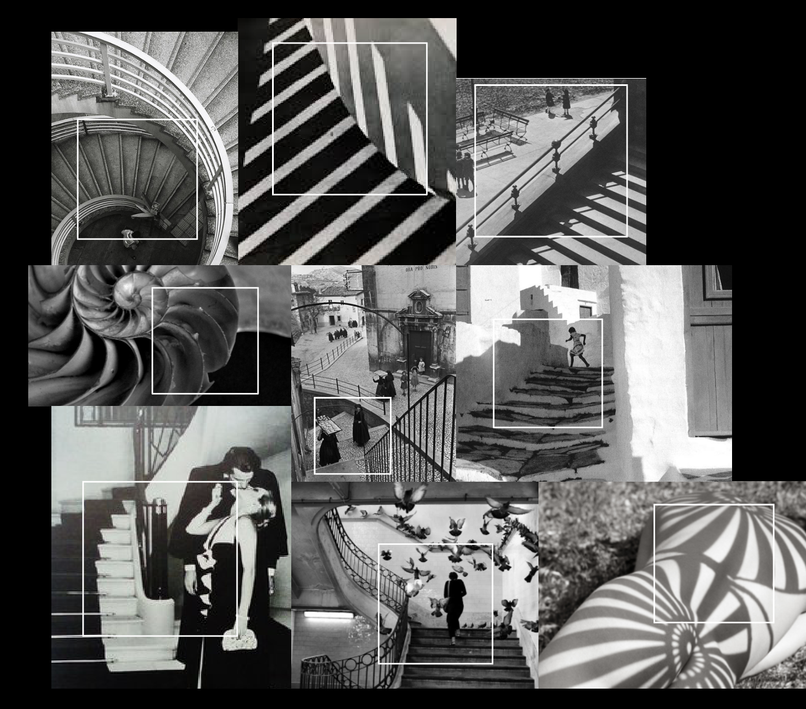
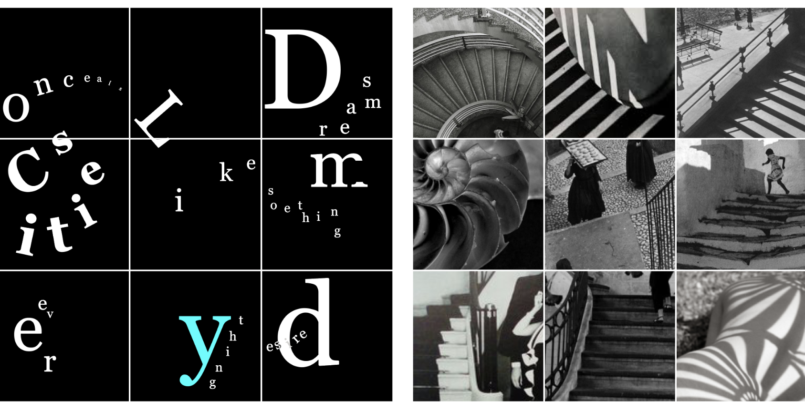

Storyboard Display
Master Photograph Storyboard is the study of understanding the flow of the image and typography as it is also the first basic step of editorial design. The project is about to integrate the chosen photos and text in 9 continuous panels in black and white making the nine-panel design as in a whole sequence.
Photos: Henri Catier Bresson, Paul Strand, Herb Ritts, Helmut Newton, Edward Weston, Berenice Abbotte.There is a quote that inspired me is “Cities, like dreams, are made of desires and fears, even if the thread of their discourse is secret, their rules are absurd, their perspectives deceitful, and everything conceals something else (Calvino 50).” From the quote, it broadens my vision of thinking the Cities that are rather boundary-less. The theme typography was selected from Didot, Charter, Optima, and Georgia. In terms of typography choice, I chose Georgia in the end, I liked how the type face has a fluid transition from its thick stroke and thin stroke. Additionally, the counter of letters’ is very wild that makes letters have enough space to breath in paragraphs; also, the contrast showing between strokes is elegant and beautiful.
 Image Croping
The process of cropping images, is to harmonize each image and to establish a flow among them. Selected a specific part from each photo, as I also developed a different set of combinations, I found the interconnected rhythms within each photo segments. Based on the photo combinations, the text flow was to the overall flow of images, I designed the text to extend itself on a smooth curve. They sometimes go across images or sometimes separate from each other, making the viewer to identify not only the text flow but also explore possibilities of reading the text in its own way. To enhance the understanding of the relationship flow of images and typography.
 Typography Design and Combination